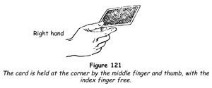

Top Change
There is no other sleight in all conjuring with cards that will give you so much pleasure as this. More than any other sleight, it lends itself to improvisation, the delightful adlibbing with a pack of cards that causes so much laughter and more nearly approaches a battle of wits with your audiences than any other conjuring manoeuvre. To exchange one card for another boldly and under the very noses of those who watch, without being detected, is a sweet triumph! It is also good entertainment; indeed, Robert-Houdin, the father of modern magic, observed over a century ago, 'I know of nothing more surprising than the effect of a card neatly "changed".' The words are still as true today.
Let us say you are going to exchange secretly a card held in the right hand for the one at the top of the pack, which is held in the left hand, as for dealing, but with the index finger resting at the outer end.
1. Hold the card in the right hand, at its inner right corner, between the outermost phalanxes of the middle finger and the thumb. Place the index finger lightly alongside the middle finger, but do not hold the card with it. The other fingers are free (figure 121).

2. Move the right hand to the left hand and slide its card under the left thumb flush on to the pack. The left index finger at the outer end prevents the card from overlapping. Do not draw it on to the pack with the left thumb.
3. Simultaneously with the preceding action, and as the right hand approaches, push the top card of the pack over its side to the right for about 25 mm (1 in), then lift the thumb a little so that the right hand can slide its card under it. Do not push off the top card before the right hand begins its swing to the left.
Although we have described the actions in steps 2 and 3 as separate processes, we have done this only for clarity. Actually the left thumb pushes the top card to the right as the right hand approaches and slides its card under the thumb and on to the pack.
4. Grasp the inner right corner of the card pushed off the pack between the right index finger and thumb (figure 122). Hold the right hand motionless with the card, and move the left hand and the pack away to the left. The right hand must not move away to the right.
The hands should be held well away from the body, and the actions should be easy and natural and should be explained by a subsequent action. For instance, you show the card held by the right hand and lower it so that it is about 30 cm (12 in) away from the left hand and the pack, but on the same level. Glance to the left, at a table or a chair; look back at your audience, saying, 'I will put the card on the chair.'
Turn your body to the left towards the chair and as you do this move the right hand towards the left a little faster than the left hand moves. The two hands meet at the middle of the turn and exchange the cards without the least hesitation. Move the left hand with the pack backwards and away, perhaps grasping the rail of the chair, as you face left and drop the card the right hand now holds on to the chair seat.
Again, you may hold the hands about 30 cm (12 in) apart and speak to someone on your right, turning a little towards him. 'I shall ask this gentleman on my left to blow on the card,' you say, at the same time turning towards your left, executing the change as the hands meet. Hold the right hand motionless, and move the left hand with the pack outwards to the left, gesturing to the person to whom you refer.
Or again, when you are doing close-up card magic, you may show a card in your right hand, then lower it so that it is horizontal. Say to someone, 'Will you hold your hand palm upwards?' and, when he raises his right hand, move the right hand to it as though to place the card on his palm. Apparently change your mind, saying, 'We'd better use your other hand,' and at this moment glance up to meet his gaze. Bring the right hand to the left, exchange the cards and move the left hand away a little. A moment later, when you place the changed card on the spectator's palm, he is unaware that it is not the card you showed the moment before.
The entire process of the top change is a smooth and natural blending of actions, and we need not tell you that to look at your hands would be fatal. You must look at the audience or at the object on which you will place the card.
The Changing Card
Here is a feat so simple that you will not realise how much laughter it can evoke until you use it. Because the best way to learn a sleight is to do it, we urge you to perform this excellent trick as often as you can.
1. Go to someone on your left and have him choose a card, show it to everyone (this is important if all are to enjoy the trick) and replace it in the pack. Control the card to the top by means of the Hindu shuffle.
2. Turn and walk to someone on your right. Spread the cards in a wide fan, saying, ' I shall ask you to point to a card, and I promise you that whatever card you point to will be the card chosen by the gentleman across the room. Kindly make a careful choice.'
3. When a card has been indicated, do not let the spectator draw it from the fan of cards, but remove it yourself, making sure that its face cannot be seen.
4. Return to the centre of the platform, holding the card in your right hand well away from the body, its back to the audience. Turn to the first spectator, saying, 'Ladies and gentlemen, here is the card!'
Turn the card to show its face and glance from right to left, bowing a little as if to acknowledge applause but at the same time turning the card into a horizontal position on a level with the pack in the left hand.
5. Next turn to the spectator on your left; as you do so, bring the right hand to the left so that it overtakes the left hand, and make the top change. Immediately the change is made, hold the right hand motionless, with its card slanting downwards so that its face cannot be seen. Move the left hand, with the pack, on to the left in a gesture towards the first spectator. 'Is this your card?'
6. Someone (and usually several people) will tell you that it is not. Turn to the right again, moving the right hand and the card away from the body with its back to the audience. Look at the card, then glance back at the spectator on your left. Now, for the first time, ask him the name of his card. He says, 'The seven of diamonds,' or whatever his card was. 'Well, this is the seven of diamonds, isn't it?' you say, turning the card face outwards as you mention the name of the card.
Hold the card in this manner for about five seconds, and do not move until the laughter has subsided.
When you have performed this trick as we have described it, you will understand the psychology of the top change better. You must not snatch the card in making the change - you do not need to make it with great speed. We have tried to emphasise that naturalness is the keynote of good conjuring, and this is especially true of the top change.
At first it may seem to you that everyone must see the exchange of cards, but a century of experience on the part of card conjurors is that, smoothly and easily performed, the exchange goes wholly unnoticed.
Top-Change Byplay
This is another quick card trick especially suitable for an impromptu or close-up performance.
1. Have a card drawn and shown to all. When it has been replaced in the deck, control it to the top by means of the Hindu shuffle.
2. 'Ah, I've made a mistake!' you apologise. 'Let's start over again. Take another card.' Force the same card on the same spectator, using the classic force. When he and those around him glance at it, they will laugh and may make some remark that it is the same card. If this happens, you must act as though it is a genuine surprise to you. You must never be smug and pleased with yourself when you make a force.
3. Reach out and take the card in your right hand. Turn to address someone on your left. 'My mother told me there'd be nights like this!' you say wryly. As you make the turn, top change the forced card for the indifferent card on top of the pack. 'Here, let's get rid of that card!'
4. Toss the card face downwards on the first spectator's lap, if he is seated, or drop it on a convenient table or chair if you are all standing. Immediately pass the forced card to the middle of the pack and force it again on the same spectator.
5. When, for the third time, the spectator draws a card which he now believes rests on his own lap, the resultant laughter will be most gratifying to you.
6. Do not touch the card you discarded in step 4. Usually some curious soul will reach for it and turn it over, and this will cause more laughter.
Bottom Change
In the bottom change the card held in the right hand is placed at the bottom of the pack, the top card being taken in its place. It is generally agreed that this change is not so smooth as the preceding method, but there are certain tricks in which it must be used if the trick is to be performed at all. You must not gather from this fact that the bottom change is difficult or detectable. Actually it is easier than the top change and, when neatly performed, it is imperceptible. We simply point out that, all things being equal, the top change is the preferable method.
The principle of the bottom change is the same as that of the top change, that is, one card is changed for another under cover of a larger movement of the hands and the withdrawal of the left hand from the right after the change has been made.
1. Hold a card face downwards in your right hand, between the thumb and index and middle fingers, and about 30 cm (12 in) from the left hand. Unlike the top change, in which the card is held at the lower corner, here you grasp it at the middle of the right side.
2. Hold the pack face downwards in the left hand between the thumb and index finger at the extreme outer end. Place the pack well into the crotch of the thumb. Keep the other three fingers free of the pack, so that by extending them an opening will be made between them and the index finger; into this opening the right-hand card may slide and be gripped as in a forceps. Rest the thumb on the top card, in readiness to push it off the pack to the right (figure 123).
3. Make a turn to the left and move the right hand towards the left, simultaneously moving the index finger from below the card on to its back, so that it is gripped between the two fingers and the thumb is free.
4. The right hand overtakes the left at the middle of the body and slides its card between the left index and the other three fingers, which drop slightly to permit this. Close the right thumb and index finger on the top card, which is pushed off the pack to the right by the left thumb (figure 124). Move the left hand away with the pack, the right hand following on more slowly with the former top card.
The changed card is now gripped squarely under the pack between the left index and the other three fingers. Close the latter on the pack and move the index finger outwards, allowing the card to be pressed up against the bottom of the pack by the fingers.
5. Continue the swing to the left, moving the left hand away from the right. At the end of this turn, the two hands are some distance apart as at the beginning. Now turn the left hand so that its back is to the audience and the bottom card cannot be seen.
6. Drop the card held by the right hand on a table or chair, or extend it to someone to blow on if the trick calls for this handling, or use the hand in a gesture to emphasise what you are saying, being careful that the face of the card cannot be seen until you are ready to reveal the change.
The entire actions should be an exact simulation of a natural turn to the left for any of the purposes mentioned in the preceding paragraph. A speedy movement of the hands is to be avoided, since it will warn the audience that something has been done, although they may not know what.
The bottom change is excellent for use with a single card in each hand or with a packet in each hand.
Top and Bottom Changes
It should be noted that, in giving instructions for the changes, we have told you that the change should be made while turning to the left. You should practise the changes in this manner until you have the knack. When you can perform them smoothly and elusively, you should learn to make changes while moving the pack to the right. When performed in this manner, the left hand moves to the right to indicate an object or person, and as it passes the right hand the exchange is made, with the right hand remaining absolutely motionless.
The exchange must be made without an instant's pause, and it is covered by a turning of the body to the right as the left hand makes its gesture and the exchange.
In the case of both the top and bottom changes, it is advisable to practise them by going through the same action you will use in the trick you plan to perform.
The following points are important:
(a) You must not snatch the card from the left hand.
(b) You must not pause noticeably at the moment when the hands meet and the cards are exchanged.
(c) When the exchange has been completed, the hands should be about the same distance apart as at the beginning.
(d) After the exchange, hold the right-hand card tilted downwards so that its face cannot be seen.
(e) Divest the sleight of importance in your own mind. Remember that the larger movement of the turn conceals the smaller movement of the hands and that to the audience the hands never meet.
One final word of caution. Do not watch yourself in a mirror as you practise. You cannot perform the action naturally if you divide your attention between what you do and how it looks. Moreover, mirror watching has a tendency to cause the eyes to widen; this is not attractive and can become a fixed habit.